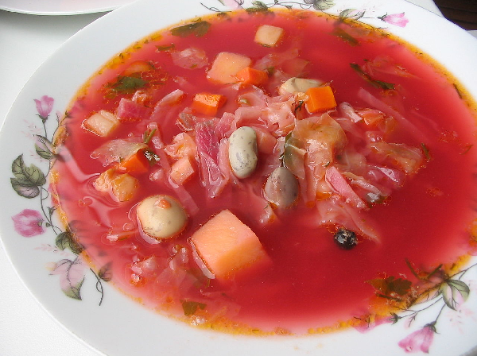
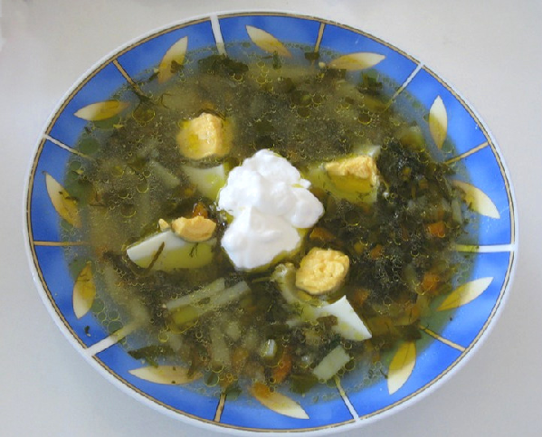
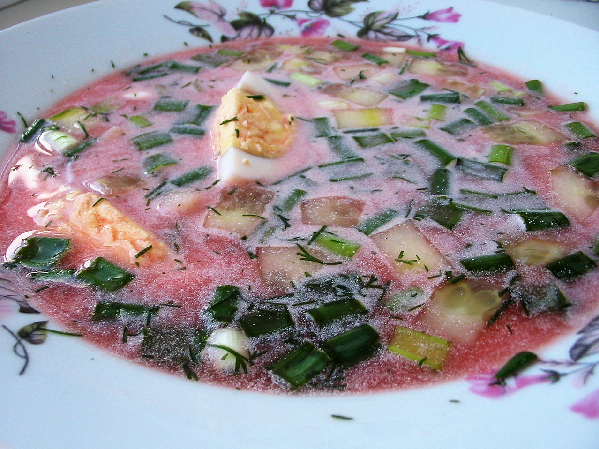

Загальний опис
Борщ унікальний своїми квасно-солодкими відтінками присмаку. Страва має більше десяти різновидів, що пов'язано з роз'єднанням у минулому українських земель, з існуванням різних частин українського народу в Польщі, Молдові, Румунії, Чехословаччині, із впливом на формування української кухні різних кулінарних звичаїв і смаків. Ареал споживання борщу поширився далеко за межі України та набув широкого поширення в національних кухнях сусідніх народів.
Своєю національною стравою борщ вважають у Молдові, Польщі, Білорусі, Литві й Росії. Але тільки в Україні протягом віків сформувався справжній культ борщу, і кожен край пишається місцевими особливостями приготування. «Привласнення» деякими народами цього елементу культури свідчить про його високу якість.
Найпоширенішими різновидами цієї традиційної страви в Україні є український, пісний із грибами та квасолею, весняний холодний. Готують борщі з м'ясом, грибами, ковбасою, додаючи сметану. Пісний борщ із грибами заправляють олією з часником, а до борщу подають пампушки, политі олією із часником, або пиріжки з м'ясом і капустою.
В Україні борщ їдять ще з раннього дитинства. Часто готують окремо дитячий борщ — без оцту й засмажки або перетертий.
Етимологія назви
Походження слова «борщ» ученими до кінця не з'ясовано.
За даними етимологічних словників слов'янських мов, слово «борщ» походить від праслов'янської назви рослини «бърщь» (сучасна назва борщівник), що первісно використовувалась при приготуванні юшки або підкисленого супу чи джуру з підкисленим борошном. Слово пов'язане (через те, що в борщівника гостре зубчасте листя) з пра-і.є. *bhrstio-, від якого також походять давньоіндійське bhrstih («зубець, вістря, край, кут»), давн-англ. byrst («щетина»), ірландське barr («маківка, верхівка»), та інші
Для слов'янських форм слова «борщ» значення «борщівник» первісне, потім «юшка з борщівника» і нарешті, спочатку лише в українській мові, «юшка, суп з буряка і капусти», звідки російською борщ, чеською і словацькою boršč, кашубською bwršč, болгарською борш, сербохорватською боршч, словенською boršč.
Менш переконливими версіями є пов'язання слова «борщ» із:
- -русько-церковнослов'янським обрьзгɴѫти «скиснути», чеським břesk «терпкий смак», польським (o)brzazg;
- -сербохорватським брст «листя, паростки»;
- -українським брость «брунька»;
- -з німецькими Borre[t]sch «огіркова трава, Borrago officinal is L.»;
- -з німецьким Bär «ведмідь» і його похідними.
За іншими версіями, слово «борщ»:
- -пов'язане із праслов'янським словом «брашно» на позначення їжі взагалі;
- -походить від слова «буряк». Варіант цієї версії стверджує, що старослав'янською «бърщъ» означало «буряк».
Види борщу
В українській кухні існують три головні різновиди борщів:
- -гарячі борщі (більш розповсюджені у кухні різних народів ніж холодні борщі):
- -червоний — готують із буряку; 
- -зелений — готують із молодого щавлю чи іншої зелені; 
- -холодний борщ. 